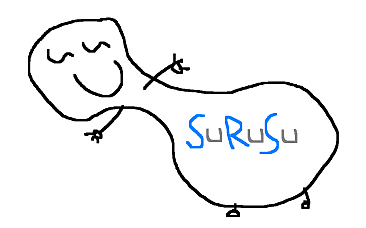

 Surusu is an SRS. What‘s an “SRS”? I‘m glad you asked. Here’s a simple explanation.
But, to put it briefly, an SRS is an electronic flashcard system that stacks, shuffles and schedules itself, in order to maximize long-term retention of information, while minimizing the time spent reviewing that information. It does that by “learning” about you through the scores you give yourself on items you review.
The idea of spaced repetition has been around for a long time, and began extensive automation as software thanks to the singular efforts of one Dr. Piotr Wozniak. But only recently is it beginning to become more widely known. Here’s a summary of what‘s unique about Surusu in particular:
 Free! As in “BitTorrent”. Surusu is completely free to use and will always remain free to use.
Free! As in “BitTorrent”. Surusu is completely free to use and will always remain free to use. Web-based: Surusu is entirely web-based. While this does require you to have an active Internet connection to use it, the benefit is that your data remain the same wherever you are, allowing you to do your reviews from anywhere in the world, free of the burden of carrying and synchronizing your data.
Web-based: Surusu is entirely web-based. While this does require you to have an active Internet connection to use it, the benefit is that your data remain the same wherever you are, allowing you to do your reviews from anywhere in the world, free of the burden of carrying and synchronizing your data.


 Extensive cross-compatibility: Surusu is built to be usable on as many types of devices as possible. Whether you use a PC, Mac, cellphone, iPhone or PDA, whatever your operating system, Surusu should work for you as long as you have an Internet connection.
Extensive cross-compatibility: Surusu is built to be usable on as many types of devices as possible. Whether you use a PC, Mac, cellphone, iPhone or PDA, whatever your operating system, Surusu should work for you as long as you have an Internet connection. Simple, reliable, fast: Surusu is designed to be as simple, reliable and fast as possible, with the idea that machines are supposed to make our lives easier, not more difficult.
Simple, reliable, fast: Surusu is designed to be as simple, reliable and fast as possible, with the idea that machines are supposed to make our lives easier, not more difficult. Built-in priority-based rescheduling with capping: From time to time, things happen. You can‘t always do your reviews (also known as “repetitions” or “reps”); sometimes you can only do some of your reviews. Assuming the unexpected, Surusu avoids punishing you, by always putting a cap on the number of items (“cards”) you are asked to review each day. Of course, if you have the time and the motivation, and want to review more, Surusu allows that, too. Surusu’s rescheduling algorithm also has the benefit of stabilizing your daily review time, preventing the wild shifts in daily review quantity that would otherwise with pure interval calculation [“you must see this card because the schedule says today is the day to see this card and there’s no arguing with or changing of the schedule no matter what“], while also using priority calculations to ensure you see the cards that need your attention most.
Built-in priority-based rescheduling with capping: From time to time, things happen. You can‘t always do your reviews (also known as “repetitions” or “reps”); sometimes you can only do some of your reviews. Assuming the unexpected, Surusu avoids punishing you, by always putting a cap on the number of items (“cards”) you are asked to review each day. Of course, if you have the time and the motivation, and want to review more, Surusu allows that, too. Surusu’s rescheduling algorithm also has the benefit of stabilizing your daily review time, preventing the wild shifts in daily review quantity that would otherwise with pure interval calculation [“you must see this card because the schedule says today is the day to see this card and there’s no arguing with or changing of the schedule no matter what“], while also using priority calculations to ensure you see the cards that need your attention most. Flexible: Spaced repetition isn’t just for learning languages. A base of memorized information is essential in all fields of knowledge. As long as it can be represented in some form of image, text or sound, Surusu can help you remember it.
Flexible: Spaced repetition isn’t just for learning languages. A base of memorized information is essential in all fields of knowledge. As long as it can be represented in some form of image, text or sound, Surusu can help you remember it. Growing: Surusu is constantly evolving, and its creator (me) is one of its most active “customers”, using it for his entire learning process across multiple fields of subject matter — mathematics, physical science, general knowledge, Japanese, Mandarin, Cantonese — with cards numbering in the tens of thousands. Useful new features are constantly being added to improve the user experience. Since its inception as “KhatzuMemo“, thousands of other users have performed millions of card reviews on it.
Growing: Surusu is constantly evolving, and its creator (me) is one of its most active “customers”, using it for his entire learning process across multiple fields of subject matter — mathematics, physical science, general knowledge, Japanese, Mandarin, Cantonese — with cards numbering in the tens of thousands. Useful new features are constantly being added to improve the user experience. Since its inception as “KhatzuMemo“, thousands of other users have performed millions of card reviews on it. Multilingual Unicode support: whatever the language, if it can be typed into a computer, then Surusu can display it. ‘Nuff said. Surusu handles even obscure colloquial characters and filenames for language such as Cantonese with ease.
Multilingual Unicode support: whatever the language, if it can be typed into a computer, then Surusu can display it. ‘Nuff said. Surusu handles even obscure colloquial characters and filenames for language such as Cantonese with ease.
Surusu is neither the first tool of its kind nor the only one. There are many other options out there; they each have their strengths and weaknesses; I encourage you to look at them and see what‘s best for you…
…before you inevitably cast them all aside with inexplicably dogmatic and visceral disdain, in favor of Surusu!!! The one true SRS!!! POWER! UNLIMITED POWER! In fact, what are you waiting for? Sign up for an account today and start solidifying your investment of knowledge acquisition.
Thanks for reading this far  . For even more information on the science behind SRS and the concept of spaced repetition you might want to look at these articles here:
. For even more information on the science behind SRS and the concept of spaced repetition you might want to look at these articles here:
- [SuperMemo] Spaced repetition in the practice of learning
- [Omniglot] Spaced repetition learning systems (SRS)
- [Wikipedia] Spaced repetition
- [Wikipedia] The Spacing Effect
Should you have any further questions, feel free to email: help at surusu dot com
Surusu: The Spaced Repetition System
What does the force rep order button do? I can’t seem to find it anywhere.
Is it just me, or did Khatz come up with the concept of modern cloud computing first?
Are there any plans to make a downloadable version of Surusu, so you can have it and use it on your computer without needing to connect to the internet?
Having something like this you could keep merging would be great.